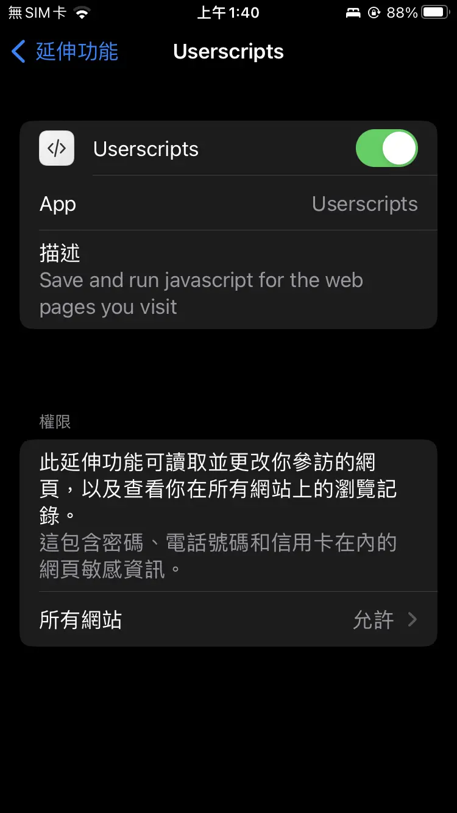

就算是 Safari 也想要用網頁腳本！（iOS/iPadOS/macOS）
在現代的瀏覽器生態中，使用者腳本（userscript）已經是一種不可或缺的功能，它允許使用者對網頁內容進行更動，如：增加網頁的功能、改變網頁的樣貌等。多數主流瀏覽器早在十多年前就可以透過安裝擴充功能等方式管理及載入使用者腳本，唯獨向來以封閉聞名的蘋果生態專用瀏覽器──Safari，直到最近幾年才在開源社群的推波助瀾下習得這項技能。
讓我們歡迎今天的主角：Userscripts！
目錄
如何使用 Userscripts
Userscripts 是一款專供 Safari 的使用者腳本擴充功能，在 iOS、iPadOS 和 macOS 都可以下載使用，並且目前無任何付費內容，不需購買、訂閱、去廣告，這麼佛心的軟體要上哪找？
答：App Store。
Userscripts 的 App Store 頁面：
https://apps.apple.com/tw/app/id1463298887Userscripts 的 GitHub 頁面：
https://github.com/quoid/userscripts
安裝＆設置 Userscripts
接下來我會使用 iPhone 8 來示範如何安裝 Userscripts 以及使用者腳本，在 iPadOS 和 macOS 上的做法也是大同小異。
打開 Userscripts 的 App Store 頁面，點擊「安裝」（由於我的帳號已經安裝過，因此顯示的是雲朵圖案）
Userscripts 的 App Store 頁面安裝完畢後，像開啟一般 App 一樣開啟 Userscripts，點擊「Set Userscripts Directory」
初次開啟 Userscripts接著找個資料夾，將其設為儲存使用者腳本的地方，確認位置後點擊右上角「完成」
我個人是在「iCloud 雲碟」裡新建了一個名為「Userscripts」的資料夾，方便我所有設備上的腳本同步，供各位參考。
「iCloud 雲碟」內的「Userscripts」資料夾設置完腳本的儲存路徑後，就可以把「Userscripts」的 App 關掉了，並且你在日後的使用中也基本不會再打開了。
打開 iPhone 的「設定」，並在選單內依序點選「Safari」、「延伸功能」、「Userscripts」，進入設定畫面，如圖所示，將「Userscripts」設為開啟、「所有網站」的權限設為「允許」
「設定」裡的「Userscripts」選單打開 Safari，在隨便一個網頁中點選網址列左邊的拼圖小圖示，如果打開的選單裡有「Userscripts」，那麼恭喜！你已經可以開始使用網頁腳本了！
拼圖小圖示的選單裡有「Userscripts」
安裝腳本
做好 Userscripts 的基本設定後，就可以開始下載腳本使用了。
目前最大宗的腳本資源網站非 GreasyFork 莫屬，這裡囊括了各種你想得到、甚至想不到的腳本，我所使用的大多數腳本也都是從這裡取得的，但如果你喜歡嘗鮮，也可以試試在其他由 Tampermonkey 整理出來的腳本資源網站裡尋寶。
Tampermonkey 是另一款使用者腳本擴充功能，有著十多年歷史的它，功能豐富且成熟，我個人也相當推薦。在電腦端的各種主流瀏覽器上均可使用。
現在馬上就開始教大家怎麼從 GreasyFork 上安裝腳本，為了能夠一眼看出是否成功安裝，我選了一個視覺反差較明顯的腳本作為示範：聰明的黑暗模式，這個腳本能夠將亮色背景的網頁轉換為深色模式。
使用 Safari 開啟上面提及的腳本頁面，點擊「安裝腳本」
「聰明的黑暗模式」的 GreasyFork 頁面有時候 GreasyFork 沒有偵測到瀏覽器上的腳本管理擴充，就會跳出下圖的提醒視窗，點擊「I already have a user script manager, let me install it!」即可。
GreasyFork 跳出的提醒視窗這時候應該會進入一個滿是原始碼的頁面，點擊網址列左側的拼圖小圖示，選擇「Userscripts」
選擇「Userscripts」打開 Userscripts 的介面後，會有一行提示，告訴我們可以安裝此頁的腳本，點擊「Tap to install」
點擊「Tap to install」接著，Userscripts 會告訴我們這個腳本所需要使用到的權限，提醒我們注意安全。往下拉到最底，點擊「Install」
點擊「Install」按下「Install」後，什麼都沒發生嗎？那就是安裝完成了。馬上打開一個沒有深色模式的網站來測試腳本是否能成功運作吧！
左：原始頁面，右：開啟腳本後
刪除腳本
如果安裝完腳本以後，才發現實際用起來不如想像中那樣美好，該如何把腳本刪除呢？
還記得在安裝 Userscripts 時設置過存放腳本的位置嗎，進入那個位置，找到腳本的檔案後直接刪除即可。
後記
由於使用者腳本的種類眾多，瀏覽器擴充也是五花八門，因此部分腳本裡用到的功能並不是所有瀏覽器都能支援的，雖然有點小小可惜，但是能夠在封閉的 iOS 環境裡使用腳本已經讓我相當感激了。
如果對 Userscripts 的其他功能還有疑問，也可以到開發者的 GitHub 說明頁看看喔！